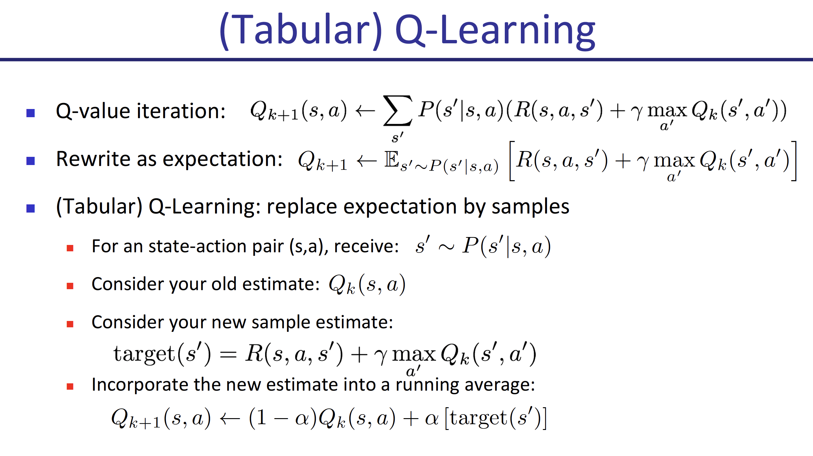
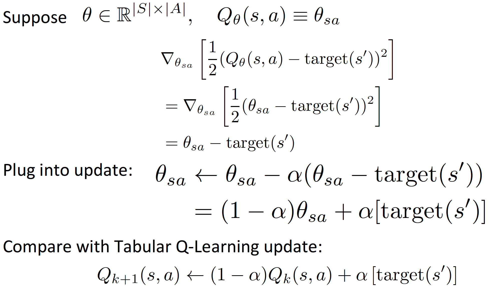

Core Lecture 2 Sample-based Approximations and Fitted Learning -- Rocky Duan
Reinforcement Learning is interesting!/p>

一、Sampling-Based Approximation
本篇文章主要研究基于采样的估计行为，作为一种统计意义上的操作，采样被普遍认为是机器学习中相当有用模拟统计量的一个手段，无论是在路径规划还是在什么一些别的领域，sample都是非常有用的～
1. 回顾一下
对于最优Q函数，其也满足相应的Bellman Equation：
和价值迭代方法完全类似，我们可以采用Q-value
Iteration的方法来进行迭代，对model已知的，确定的离散环境（state和action取值集合都是离散的，例如Gridworld游戏），求出所有的Q函数值来，这样的话最优策略
不过正如上一篇文章中最后所描述的那样，这种价值迭代（包括上次提到的策略迭代）方法存在着两个致命的缺陷，其中第一个就是需要对环境模型已知，也就是说对所有的
2. Tabular Q-Learning
Tabular Q-Learning，指的是“列成表的Q-Learning”，即将所有可能的Q函数值全部都存在一张表里，当学习过程完成之后，在进行策略选择时只需要通过查表+比较的方法即可非常方便确定动作的选择，毫无疑问这种方法是非常明确的，但是效率和成本限制了其的应用，这一点到后边再谈。Tabular Q-Learning使用采样的方法，对模型未知的情况进行处理，也就是说这是一种Model-Free的算法。

上图展示了这种学习方法的一个过程，首先和普通Q-Learning完全类似进行迭代，但是由于model-free，这里采用采样求期望的方法替代P(s'|s,
a)。在具体操作上，我们进行多次采样，每次采样后都使用本次采样的结果对Q函数进行更新，由于Q函数函数值代表着当前状态s和动作选择a组合对应的奖励值，每次采样获得的都是对这一值的使用
正如左图展示的那样，该算法同样从k=0开始迭代。不过个人认为左图可能有点错误，即应该在target计算的时候需要注意区分
需要注意的是，这个学习过程中存在两次“采样”。第一次是给定s，采样获得a，之后进行动作；第二次是给定s和a，提交给环境后环境进行反馈得到一个s‘。第二次体现了这个学习过程的model-free性质，第一次则是需要重点考虑的。给定s选择a，这正是策略
在这里进行一组概念的区分：off-policy和on-policy
- off-policy：学习过程中每次训练选择action的policy和最终期望训练的（用来更新Q函数，即在target式子当中和s‘状态组合的action采用的选择方法）那个policy不同，例如刚才分析的Tabular
Q-Learning算法，选择action采用的是
的，因此两个policy不同，为off-policy方法 - on-policy：学习过程中每次训练选择action的policy和最终期望训练的（用来更新Q函数，即在target式子当中和s‘状态组合的action采用的选择方法）那个policy相同，例如SARSA算法，和Q-Learning基本完全类似，但是在更新Q函数计算target的时候采用同样的
方法计算a‘，与选择a的policy相同，因此其为on-policy方法
3.Value Iteration，Policy Iteration的Sampling-Based方法
（1）Value Iteration
首先回顾一下value iteration的迭代方法
但是如何通过在未知模型的情况下，通过采样的方式确定max值，目前仍然没有办法，所以这个问题暂时搁置
（2）Policy Iteration
首先回顾一下policy iteration的算法过程
首先通过迭代至收敛完成policy evaluation，获得该策略下的状态价值函数V，迭代过程如下
之后在进行一次策略迭代更新
将以上过程循环，直至收敛，具体来说，策略迭代更新就是采用"one-step-look-ahead"的方法选择动作，但是和Value Iteration类似，目前我们没有办法通过采样处理确定max值
二、Function Fitting
以上提到的sampling-based方法，解决了文章开头提到的初始版本价值迭代/策略迭代的第一个缺陷（对model的要求），接下来我们尝试处理第二个缺陷，即需要记录所有情况的价值函数值，不仅只能处理离散的状态-动作空间，而且存储成本巨大。
我们采用的方法是"Generalizing Across States"，即对状态进行归纳整合。我们讨论Q-Learning的情况，基础版本的Q-Learning需要存储所有状态-动作的q函数值在一个表格当中（tabular Q-Learning），但是在许多（尤其是连续空间）情况下这是不可能实现的。我们期望达到的目标是：通过学习少量（相比于连续空间的海量）样本，获得的策略能够推广至没学过但相似的情况仍然有效，这实际上是机器学习的一个很基本的想法。为了初步实现这种想法，我们引入了Approximate Q-Learning算法。
1. Approximate Q-Learning
与tabular Q-Learning相比，Approximate
Q-Learning通过将Q函数参数化来进行简化和估计，以线性为例，原先我们需要存储表格记录下所有的Q函数取值情况，现在我们只需要根据已知的n个线性函数
在进行Q-Learning的时候，target始终是非常重要的一个量。作为对当前状态s和采取动作a组合下获得奖励大小的最新估计，我们每次的学习都是希望Q(s,
a)能够距离target更近一点，为此在Q-Learning中我们采用了引入学习率

事实上，以上形式的线性Approximate Q-Learning和Tabular Q-Learning存在着联系，或者说Tabular Q-Learning就是Approximate
Q-Learning的一个特殊情况。正如左边所示，即取
将这种Approximate Q-Learning的方法进一步发展，由于我们很难选用合适的函数去拟合表示Q函数，可以采用神经网络的方式去替代Q函数，其参数就是网络的权重，以此获得参数化的效果，具体将在下一篇中具体论述，也就是大名鼎鼎的DQN算法。